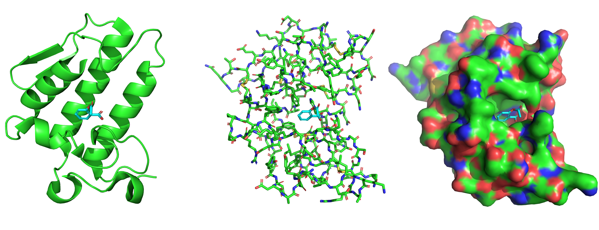
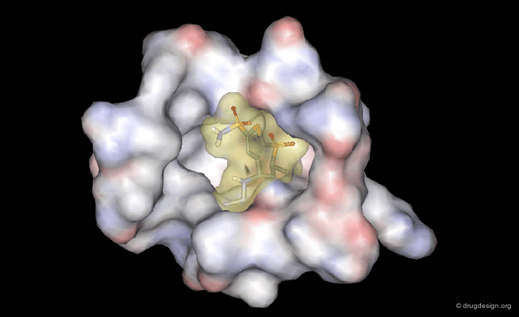

The Next Generation of Machine Learning Models For Binding Affinity Prediction
Introduction
Small Molecule Drugs
The vast majority of approved therapeutics are small molecules designed to bind to specific target proteins. Proteins are macromolecules composed of folded amino acid chains, possessing 3D folds that dictate their biological function. Small molecules, or ligands, are low-molecular-weight organic compounds (natural or designed) that bind into designated binding pockets on these proteins. By binding to these sites, ligands can modulate, inhibit, or enhance the protein’s activity to achieve a therapeutic effect.
3D Structures
To design small-molecule drugs binding to specific target proteins, researchers rely on accurate 3D structural data. The gold standard for obtaining these structures is X-ray crystallography, which captures proteins (and the interacting small molecules) in their true 3D state as found in the physiological environment. Resulting structures are publicly deposited in the Protein Data Bank (PDB, Example: https://www.rcsb.org/structure/1OXR).
Visualizing Proteins, Ligands, and Their Interactions
Proteins and ligands can be visualized in 3D using molecular visualization software (e.g. PyMOL). These tools allow researchers to explore the protein’s surface, identify binding pockets, and observe how ligands interact with the protein at an atomic level. There are different ways to visualize these interactions, such as showing the protein in a cartoon representation, with all atoms shown in a stick representation or with an approximated surface. Atoms are generally colored by element (e.g. carbon in green, cyan or magenta, oxygen in red, nitrogen in blue, sulfur in yellow, and hydrogen in white).
Cartoon representation: Shows the protein’s secondary structure (alpha helices, beta sheets, loops), which are common ways the amino acid chains fold within a protein. This representation highlights the protein’s overall fold, providing a clear view of the protein’s architecture.
Stick representation: Displays all atoms and bonds in the protein and ligand as sticks (hydrogens are usually not shown), allowing for a detailed view of the atomic bonds (covalent).
Surface representation: Displays the protein’s surface as a solid shape, which can be colored by properties such as electrostatic potential or hydrophobicity. This representation helps to visualize the shape and accessibility of the binding pocket, as well as how the ligand fits into it.

Protein-Ligand Interactions
The efficacy of a drug is heavily dependent on its binding affinity: The strength of the interaction between the ligand and the protein. High affinity ensures the ligand remains bound to its target even at low concentrations, which minimizes required dosages and reduces off-target side effects. This affinity is driven by a complex interplay of physical non-covalent interactions. These include hydrogen bonding, electrostatic forces, van der Waals interactions, and hydrophobic effects that displace ordered water molecules from the binding pocket.
Computational Drug Discovery and Virtual Screening
The primary goal of computational drug discovery / virtual screening in the small molecule domain is to rapidly and cost-effectively identify promising small molecules from libraries containing millions of candidates. Structure-based drug discovery explicitly leverages the known 3D geometry of the target protein. To evaluate a drug candidate, a computational docking tool is used to dock the ligand into the target pocket, aiming to find a favourable binding pose. Docking algorithms explore the conformational space of the ligand and the protein pocket, generating multiple possible binding poses.

Not all of the binding poses that are generated for a ligand are realistic or even physically possible. For this reason, once these 3D protein-ligand complexes are generated, they are evaluated using a scoring function, a computational method that produces scores that reflect a binding energy (low energy is better, meaning the binding is more stable). These scoring functions should separate true binders from non-binders, and ideally rank the true binders poses by their binding affinity. The top ranked candidates can then be selected for experimental validation, which is the ultimate test of a drug candidate’s efficacy.
Classical and Machine Learning Scoring Functions
Historically, virtual screening has relied on classical scoring functions. These empirical, knowledge-based, or force-field methods (such as AutoDock Vina) use predefined physics-based calculations to estimate a binding energy for a given protein-ligand binding pose. In recent years, Machine Learning (ML) scoring functions have been developed for binding pose scoring, which are trained on existing protein-ligand complexes with known binding energies (like the crystal structures in the PDB). These ML scoring functions can be broadly categorized into two types:
Classical Machine Learning Methods: Models such as Random Forests and XGBoost use engineered physics-based descriptors and non-covalent interaction counts to predict affinity.
Deep Learning Methods: Use neural networks that have been trained on existing data (protein-ligand poses with binding energy labels) and have learned to assign binding energies to 3D protein-ligand binding poses.
Summary of the Classical Computational Drug Screening Workflow
- Obtain the 3D structure of the target protein (from the PDB or with folding models such as AlphaFold).
- Use a docking tool to generate multiple binding poses for each ligand in your library.
- Score the generated poses using a scoring function (classical or ML-based).
- Select the top-ranked candidates for experimental validation.
Dynamics
In the above workflow, the protein and ligand are treated as static, and the scoring function predicts the binding energy based on a single pose. However, in reality, both the protein and ligand are dynamic molecules that move constantly.
While the static crystal structures in the PDB provide valuable atomic resolution binding information, molecular systems in physiological environments are highly dynamic. The positioning in the crystal structure represents an energy minimum state. In physiological conditions, proteins and ligands are constantly moving, fluctuating around this energy minimum, and the binding pocket can adopt multiple conformations.
Simulating the dynamics
Given an input structure of a protein-ligand complex, Molecular Dynamics (MD) simulations can be used to simulate the dynamics of the system. MD simulations use classical physics to model the forces acting on each atom in the system and integrate these forces over time to generate a trajectory of atomic positions. This trajectory captures the dynamic behavior of the protein-ligand complex, allowing researchers to observe how the binding pocket and ligand conformations change over time.
How should we design future scoring functions? Some ideas:
(You can read this once you have familiarized yourself with ML scoring functions, their problems and drawbacks)
Trajectory-based Binding Energy Prediction
The dynamic nature of protein-ligand interactions suggests that a single static pose may not fully capture the dynamic nature of the protein-ligand interaction, suggesting that binding energy predictions based on a single pose may be inaccurate. Instead, analyzing the entire trajectory of the protein-ligand complex could potentially provide a more accurate binding energy prediction.
Reliability and Explainability
Produce a scoring function that is not a black box, but provides the user with an explanation of why it scores a given pose highly. It could for example provide a 3D visualization of the protein-ligand complex with the predicted non-covalent interactions highlighted, and a breakdown of the predicted binding energy into its contributing components (e.g. hydrogen bonding, electrostatics, van der Waals, hydrophobic effects, etc.). This would allow researchers to understand the underlying reasons for the predicted binding affinity and make informed decisions about which candidates to pursue further. For this one would need to train a model to correctly predict non-covalent interactions (e.g. hydrogen bonds, salt bridges, hydrophobic contacts) in addition to the binding energy.
Including Water Molecules in the Binding Pocket
Besides the protein atoms and the ligand atoms, water molecules in the binding pocket can also play a significant role in the binding affinity. Water molecules can mediate interactions between the protein and ligand, and their displacement upon ligand binding can contribute to the overall binding free energy. Therefore, including water molecules in the scoring function could improve the accuracy of binding affinity predictions.
Hybrid Classical and Machine Learning Scoring Functions
A hybrid approach that combines classical scoring functions with machine learning models could leverage the strengths of both methods. Classical scoring functions can provide a physics-based foundation, while machine learning models can capture complex patterns and relationships in the data that may not be easily captured by classical methods. This hybrid approach could potentially lead to more accurate and robust binding affinity predictions.